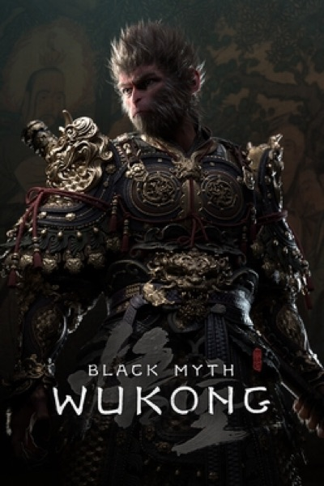

RPG · 2024
Black Myth: Wukong
Chinese mythology rendered as spectacle; a landmark for the region.

Cover: Wikipedia: Black Myth: Wukong
Facts
- Released
- 2024-08-20
- Genre
- Action RPG
- Category
- RPG
- Platforms
- PC, PlayStation, Xbox
- Developers
- Game Science
- Publishers
- Game Science
PC requirements
- Minimum
- [object Object]
- Recommended
- [object Object]